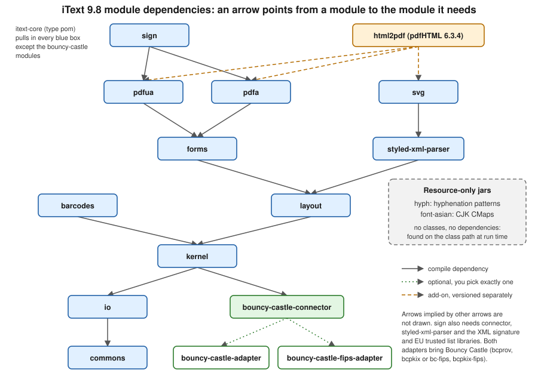

iText Architecture & Modules
|
This content was generated with the assistance of AI and should be verified against the official documentation before being relied on in production. |
iText is not one jar. Since iText 7 it is a family of small Maven modules that depend on each other in layers: a
low-level core that reads and writes PDF objects, a layout engine on top of it, and a set of feature modules (forms,
signatures, barcodes, PDF/A, PDF/UA, SVG) that each add one capability. Knowing which module owns which class tells you
what to put in the pom.xml, why a dependency tree looks the way it does, and where to look when something is missing at
run time. This page maps that structure for the Bookshelf Billing service, as of 2026-10-09: iText Core 9.8.0 and
pdfHTML 6.3.4. It also places the older generations (iText 1, 2 and 5) and the OpenPDF fork relative to the current code
line, lists the add-ons and their licences, and notes the .NET port.
All examples were compiled and run on a Java 21 language level (--release 21) against exactly those versions, in a
throwaway Maven project; the output shown is the real output.
From iText 1/2 to iText 9
The name "iText" covers several unrelated code bases, and the confusion between them is the most common source of wrong Stack Overflow answers and broken imports.
| Generation | Root package | Licence | Status as of 2026-10-09 |
|---|---|---|---|
iText 1 and 2 (up to 2.1.7) |
|
MPL or LGPL |
Frozen. Its code line lives on as the community fork OpenPDF. |
iText 5 |
|
AGPLv3 or commercial |
Legacy. The newest artifacts on Maven Central ( |
iText 7, 8 and 9 |
|
AGPLv3 or commercial |
Current. iText 7 was a rewrite, not an upgrade; 8 and 9 evolve it. 9.8.0 is the version used here. |
OpenPDF 1.x to 3.x |
|
MPL or LGPL |
Maintained community fork of the old iText API. 3.0.5 is the latest on Maven Central. |
Three consequences follow, and they are the outdated points this page corrects for anyone arriving with an older book or tutorial in hand (finding O1 of the section’s spec):
-
iText 7 and later is a rewrite. The monolithic
com.lowagie.textand thencom.itextpdf.textpackages became the modularkernel,io,layout,formsandsignpackages described below. Classes do not have one-to-one equivalents;PdfPTable,PdfStamperandAcroFieldsbecameTable, a stampingPdfDocumentandPdfAcroForm, for instance. The mapping is collected on the migration page of this section, and iText publishes its own migration guide from iText 5 to iText 7. -
iText 5 is end-of-life as a development line. It is still downloadable as a "legacy" product, and maintenance releases of the 5.5.13.x line still appear on Maven Central, but new work (PDF 2.0, PDF/A-4, PDF/UA-2, AES-GCM encryption) happens only in the modular code line. See the iText 5 legacy page.
-
The licence is AGPLv3 or commercial, and this is not a detail. iText 1 and 2 were MPL/LGPL, which allowed closed-source use for free; iText 5 and everything after are AGPLv3 unless you buy a commercial licence. A closed-source service that exposes PDF generation over a network must either publish its own source under the AGPL or buy the commercial licence; the choice between those two is discussed in Introduction & Approaches. If neither is acceptable, the LGPL/MPL fork OpenPDF is the alternative that keeps the old, simpler API. Be aware that OpenPDF 3.0 renamed its root package from
com.lowagietoorg.openpdf, so the OpenPDF 2.x imports in old code need a package rename (see the OpenPDF project).
When a project inherits code of unknown age, the quickest diagnosis is to ask the class loader which root classes exist. The following program does exactly that, with a Java record and an immutable list; it needs only the JDK.
package com.example.billing;
import java.util.List;
/**
* Reports which generation of iText (or its LGPL fork) is on the class path, by probing the root class of each one.
*/
public final class Generations {
private record Generation(String name, String licence, String probeClass) {
boolean present() {
try {
Class.forName(probeClass, false, Generations.class.getClassLoader());
return true;
} catch (ClassNotFoundException e) {
return false;
}
}
}
private static final List<Generation> GENERATIONS = List.of(
new Generation("iText 1/2 or OpenPDF 1.x/2.x", "MPL or LGPL", "com.lowagie.text.Document"),
new Generation("iText 5", "AGPLv3 or commercial", "com.itextpdf.text.Document"),
new Generation("iText 7, 8 or 9", "AGPLv3 or commercial", "com.itextpdf.kernel.pdf.PdfDocument"),
new Generation("OpenPDF 3.x", "MPL or LGPL", "org.openpdf.text.Document"));
private Generations() {
}
public static void main(String[] args) {
GENERATIONS.forEach(generation -> System.out.printf("%-30s %-22s %s%n",
generation.name(), generation.licence(), generation.present() ? "on the class path" : "absent"));
}
}With iText 9.8.0 on the class path, it prints:
iText 1/2 or OpenPDF 1.x/2.x MPL or LGPL absent iText 5 AGPLv3 or commercial absent iText 7, 8 or 9 AGPLv3 or commercial on the class path OpenPDF 3.x MPL or LGPL absent
The probe is derived from the package layout documented in the iText Core API reference and the OpenPDF README.
The modules of iText Core
iText Core is published on Maven Central under the group id com.itextpdf, and every module of the core line carries the
same version number (9.8.0 here). Reading the module POMs of 9.8.0 gives the real dependency structure; the figure below
shows it, with arrows drawn only where they are not implied by another path.

Each module has one job and a predictable root package:
| Maven artifact | Root package | What it owns |
|---|---|---|
|
|
Shared infrastructure: the event and product-usage framework, JSON utilities, and the Bouncy Castle factory
interfaces ( |
|
|
Byte sources and sinks, font programs (TrueType, OpenType, Type 1, CFF), image decoders (JPEG, PNG, TIFF, GIF, JBIG2), encodings and CMaps. No notion of a PDF page. |
|
|
The PDF object model and file I/O: |
|
|
The high-level layout engine: |
|
|
AcroForms ( |
|
|
Digital signatures ( |
|
|
One-dimensional barcodes (Code 128, EAN and UPC, Code 39, Interleaved 2 of 5, Codabar, MSI, Postnet), QR Code, Data Matrix and PDF417, each able to produce a form XObject. |
|
|
|
|
|
|
|
|
|
|
|
A shaded fork of the jsoup HTML parser plus the CSS parsing and resolution machinery shared by |
|
resources only ( |
Hyphenation pattern files for many languages. The classes that use them are in |
|
resources only ( |
Predefined CJK CMaps for the standard Asian fonts. The code that uses them is in |
|
|
|
|
|
The two interchangeable implementations of the cryptography factory, described in the next section. |
|
none (a POM aggregator) |
Depends on every module above except the adapters (and the connector comes in through |
The 9.x structure differs from the first iText 7 releases in two ways worth knowing when reading older tutorials: the
commons module is a later addition that holds infrastructure shared by all the others, and the Bouncy Castle code left
kernel and sign in 8.0.0 to live behind the connector. The iText knowledge base describes the building blocks in its
iText building blocks tutorial (written for iText 7/8, the class
names for the layout elements are still valid in 9), and lists every module in
Installing iText for Java.
Choosing modules in the POM
There are two ways to depend on iText Core, and both are shown on the installation page of the knowledge base.
Everything at once. This is what the section’s other pages use. itext-core is declared as <type>pom</type>, so
Maven resolves it as an aggregator and adds every module of the table above. This is the safest choice for a Spring Boot
service: it costs a few megabytes of jars and removes the "class not found at run time" class of errors.
Only what you use. The knowledge base states that kernel, io and layout are always needed, and every other module
is optional. A service that only draws tables needs none of the feature modules. The following program uses just the
layout artifact (which pulls kernel, io and commons transitively; Maven resolved exactly those four, plus the
connector, Jackson and SLF4J, in the test below) and no Bouncy Castle adapter:
<properties>
<java.version>21</java.version>
<itext.version>9.8.0</itext.version>
</properties>
<dependencies>
<!-- layout brings kernel, io and commons; no signing, forms or encryption support is included -->
<dependency>
<groupId>com.itextpdf</groupId>
<artifactId>layout</artifactId>
<version>${itext.version}</version>
</dependency>
</dependencies>package com.example.billing;
import java.io.ByteArrayOutputStream;
import com.itextpdf.bouncycastleconnector.BouncyCastleFactoryCreator;
import com.itextpdf.kernel.pdf.PdfDocument;
import com.itextpdf.kernel.pdf.PdfWriter;
import com.itextpdf.layout.Document;
import com.itextpdf.layout.element.Paragraph;
public final class MinimalHello {
public static void main(String[] args) {
var bytes = new ByteArrayOutputStream();
try (var document = new Document(new PdfDocument(new PdfWriter(bytes)))) {
document.add(new Paragraph("Hello from kernel, io and layout only"));
}
System.out.println("PDF bytes: " + bytes.size());
// Nothing above needed Bouncy Castle. Asking for its factory is where a missing adapter shows up.
try {
var factory = BouncyCastleFactoryCreator.getFactory();
System.out.println(factory.getClass().getSimpleName());
System.out.println(factory.getProviderName());
} catch (RuntimeException e) {
System.out.println(e.getClass().getSimpleName() + ": " + e.getMessage());
}
}
}PdfDocument and Document implement AutoCloseable, so a single try-with-resources block closes the layout
document, the PDF document and the writer in the right order (this is the Java 21 style used throughout the
section, see the last section of this page). The program prints:
PDF bytes: 1139 BouncyCastleDefaultFactory UnsupportedOperationException: Either com.itextpdf:bouncy-castle-adapter or com.itextpdf:bouncy-castle-fips-adapter dependency must be added in order to use functionality requiring cryptography
The PDF was produced without any cryptography on the class path. The failure only appears when code asks for functionality that needs it, which is the subject of the next section. This example derives from the Installing iText for Java page, which lists the modules and states which are mandatory.
Bouncy Castle: connector and adapters
Signing, encryption with certificates, ASN.1 parsing, OCSP and timestamp validation all need a cryptography provider.
Before 8.0.0 the kernel and sign modules imported org.bouncycastle directly, so you could not choose between the
standard Bouncy Castle and the FIPS 140 certified build, and Bouncy Castle versions could clash with the ones your
application already used. Since 8.0.0 iText talks to Bouncy Castle only through the factory interfaces in commons.
The implementation is discovered at run time:
-
bouncy-castle-connectorcontainsBouncyCastleFactoryCreator, the single place where the factory is looked up. It is a dependency ofkernel, so it is always present. -
bouncy-castle-adapterimplements the factory over the regular Bouncy Castle artifacts (bcprov-jdk18onandbcpkix-jdk18on, version 1.86 in the test below). -
bouncy-castle-fips-adapterimplements it over the FIPS build (bc-fipsandbcpkix-fips). -
The connector declares both adapters as optional dependencies, so Maven never adds one on its own. You add exactly one. The knowledge base is explicit that adding both is not supported because they are incompatible. If neither is present, iText still works for plain generation, and the first cryptographic call fails with the message shown in the previous section.
Use the regular adapter by default, as in the Maven setup of the Getting Started with Spring Boot page. Switch to the FIPS adapter only when a FIPS-validated provider is a compliance requirement, and then supply the Bouncy Castle FIPS version your certification covers: the knowledge base explains that the certified build is tied to specific JRE versions and that a fixed but non-certified release exists, so the version choice is yours to make explicitly.
<dependencies>
<dependency>
<groupId>com.itextpdf</groupId>
<artifactId>itext-core</artifactId>
<version>${itext.version}</version>
<type>pom</type>
</dependency>
<!-- replace bouncy-castle-adapter with the FIPS variant; never keep both -->
<dependency>
<groupId>com.itextpdf</groupId>
<artifactId>bouncy-castle-fips-adapter</artifactId>
<version>${itext.version}</version>
</dependency>
</dependencies>With that POM, the module-mapping program shown in the next section reports BouncyCastleFipsFactory from
bouncy-castle-fips-adapter-9.8.0.jar, and Maven resolved bc-fips 2.1.1 and bcpkix-fips 2.1.12 transitively.
With the regular adapter it reports BouncyCastleFactory from bouncy-castle-adapter-9.8.0.jar.
Because "never both" is easy to violate through a transitive dependency in a multi-module build, it is worth turning it into a build rule. The Maven Enforcer plugin fails the build if the unwanted adapter appears anywhere in the dependency tree; the check below was run against a POM that declared both adapters and failed with the configured message:
<build>
<plugins>
<plugin>
<groupId>org.apache.maven.plugins</groupId>
<artifactId>maven-enforcer-plugin</artifactId>
<version>3.6.2</version>
<executions>
<execution>
<id>one-bouncy-castle-adapter</id>
<goals>
<goal>enforce</goal>
</goals>
<configuration>
<rules>
<bannedDependencies>
<excludes>
<exclude>com.itextpdf:bouncy-castle-fips-adapter</exclude>
</excludes>
<message>Use either bouncy-castle-adapter or bouncy-castle-fips-adapter, never both.</message>
</bannedDependencies>
</rules>
</configuration>
</execution>
</executions>
</plugin>
</plugins>
</build>The behaviour is documented in the knowledge base page Bouncy Castle changes, and the rule syntax in the Maven Enforcer banned dependencies rule. The same page covers the Android limitation (Android artifacts depend on the standard Bouncy Castle only) and the .NET equivalents of the two adapters.
Seeing which module owns which class
When a NoClassDefFoundError or a duplicate-class warning shows up in a large Spring Boot application, ask the class
loader which jar a class came from. The program below prints one representative class per module, and for the two
resource-only jars it looks up a resource instead of a class. It needs itext-core (type pom) and the regular adapter,
exactly the dependencies of the first example of the Getting Started page:
package com.example.billing;
import java.nio.file.Path;
import java.util.LinkedHashMap;
import java.util.Map;
import com.itextpdf.barcodes.BarcodeQRCode;
import com.itextpdf.bouncycastleconnector.BouncyCastleFactoryCreator;
import com.itextpdf.commons.actions.EventManager;
import com.itextpdf.forms.PdfAcroForm;
import com.itextpdf.io.font.PdfEncodings;
import com.itextpdf.kernel.pdf.PdfDocument;
import com.itextpdf.layout.Document;
import com.itextpdf.pdfa.PdfADocument;
import com.itextpdf.pdfua.PdfUADocument;
import com.itextpdf.signatures.PdfSigner;
import com.itextpdf.styledxmlparser.jsoup.Jsoup;
import com.itextpdf.svg.converter.SvgConverter;
public final class ModuleMap {
private ModuleMap() {
}
private static String jarOf(Class<?> type) {
var location = type.getProtectionDomain().getCodeSource().getLocation().getPath();
return Path.of(location).getFileName().toString();
}
private static void printResource(String module, String resource) {
var url = ModuleMap.class.getResource(resource);
System.out.printf("%-18s %-45s %s%n", module, resource.substring(resource.lastIndexOf('/') + 1),
url == null ? "missing" : url.getPath().replaceAll("^.*/([^/]+\\.jar).*$", "$1"));
}
public static void main(String[] args) {
Map<String, Class<?>> representatives = new LinkedHashMap<>();
representatives.put("commons", EventManager.class);
representatives.put("io", PdfEncodings.class);
representatives.put("kernel", PdfDocument.class);
representatives.put("layout", Document.class);
representatives.put("forms", PdfAcroForm.class);
representatives.put("sign", PdfSigner.class);
representatives.put("barcodes", BarcodeQRCode.class);
representatives.put("pdfa", PdfADocument.class);
representatives.put("pdfua", PdfUADocument.class);
representatives.put("svg", SvgConverter.class);
representatives.put("styled-xml-parser", Jsoup.class);
representatives.forEach((module, type) ->
System.out.printf("%-18s %-45s %s%n", module, type.getSimpleName(), jarOf(type)));
// hyph and font-asian hold resources only, so look for a resource instead of a class
printResource("hyph", "/com/itextpdf/hyph/fr.xml");
printResource("font-asian", "/com/itextpdf/io/font/cmap/UniJIS-UTF16-H");
// the Bouncy Castle adapter is found through a factory, not through a compile-time dependency
var factory = BouncyCastleFactoryCreator.getFactory();
System.out.printf("%-18s %-45s %s%n", "bouncy-castle", factory.getClass().getSimpleName(),
jarOf(factory.getClass()));
}
}The output confirms the table of the previous sections:
commons EventManager commons-9.8.0.jar io PdfEncodings io-9.8.0.jar kernel PdfDocument kernel-9.8.0.jar layout Document layout-9.8.0.jar forms PdfAcroForm forms-9.8.0.jar sign PdfSigner sign-9.8.0.jar barcodes BarcodeQRCode barcodes-9.8.0.jar pdfa PdfADocument pdfa-9.8.0.jar pdfua PdfUADocument pdfua-9.8.0.jar svg SvgConverter svg-9.8.0.jar styled-xml-parser Jsoup styled-xml-parser-9.8.0.jar hyph fr.xml hyph-9.8.0.jar font-asian UniJIS-UTF16-H font-asian-9.8.0.jar bouncy-castle BouncyCastleFactory bouncy-castle-adapter-9.8.0.jar
The class locations are those documented in the iText Core API reference, where every package is listed under its module.
One invoice, several modules
The modules cooperate through plain objects: a feature module produces a form XObject, an element or a field, and the
layout engine places it. The following program builds a one-page Bookshelf Billing sample that touches the less obvious
modules in one document: layout for the paragraph, hyph for hyphenation, svg for a logo, barcodes for the QR code
that later pages turn into a VeriFactu-style code, forms for an editable customer reference and font-asian for a CJK
line using one of the standard Asian fonts. The QR content is a placeholder URL on a reserved .invalid domain.
package com.example.billing;
import java.io.IOException;
import java.nio.file.Path;
import com.itextpdf.barcodes.BarcodeQRCode;
import com.itextpdf.forms.form.element.InputField;
import com.itextpdf.kernel.font.PdfFont;
import com.itextpdf.kernel.font.PdfFontFactory;
import com.itextpdf.kernel.pdf.PdfDocument;
import com.itextpdf.kernel.pdf.PdfWriter;
import com.itextpdf.kernel.pdf.xobject.PdfFormXObject;
import com.itextpdf.layout.Document;
import com.itextpdf.layout.element.Image;
import com.itextpdf.layout.element.Paragraph;
import com.itextpdf.layout.hyphenation.HyphenationConfig;
import com.itextpdf.svg.converter.SvgConverter;
/**
* Touches the modules that sit on top of kernel and layout: barcodes, svg, forms, hyph and font-asian.
*/
public final class InvoiceModules {
private static final String LOGO_SVG = """
<svg xmlns="http://www.w3.org/2000/svg" width="120" height="40" viewBox="0 0 120 40">
<rect width="120" height="40" fill="#1f5fa6"/>
<text x="60" y="26" font-size="16" text-anchor="middle" fill="#ffffff">Bookshelf</text>
</svg>
""";
private InvoiceModules() {
}
public static void main(String[] args) throws IOException {
var target = Path.of(args.length > 0 ? args[0] : "invoice-modules.pdf");
try (var pdf = new PdfDocument(new PdfWriter(target.toString()));
var document = new Document(pdf)) {
// layout (and kernel underneath): the high-level elements
document.add(new Paragraph("Invoice 2026-0042"));
// hyph: hyphenation patterns, found through the hyph jar on the class path
document.add(new Paragraph("Internationalization considerations for typesetting")
.setWidth(90)
.setHyphenation(new HyphenationConfig("en", "US", 2, 2)));
// svg: an SVG logo converted to a form XObject, then wrapped in a layout Image
PdfFormXObject logo = SvgConverter.convertToXObject(LOGO_SVG, pdf);
document.add(new Image(logo));
// barcodes: the QR code image of the invoice
var qr = new BarcodeQRCode("https://example.invalid/verify?invoice=2026-0042");
document.add(new Image(qr.createFormXObject(pdf)).scaleToFit(80, 80));
// forms: an AcroForm text field filled in by the customer
var field = new InputField("customerReference");
field.setInteractive(true);
document.add(field.setWidth(150));
// font-asian: predefined CJK fonts and their CMaps come from this module
PdfFont cjk = PdfFontFactory.createFont("STSong-Light", "UniGB-UCS2-H",
PdfFontFactory.EmbeddingStrategy.PREFER_NOT_EMBEDDED);
document.add(new Paragraph("书店 Bookshelf").setFont(cjk));
}
System.out.println("Wrote " + target.toAbsolutePath());
}
}Running it produced a valid one-page file whose text extraction returns the heading, the hyphenated paragraph
(Internationaliza-, tion considera-, tions for typeset-, ting), the logo text and the CJK line, and whose catalog
contains an AcroForm with one widget. A few details are version sensitive. The high-level form elements under
com.itextpdf.forms.form.element are the 7.2 and later API; the old static PdfFormField.createText factory methods
were removed in iText 8.0 in favour of builders such as TextFormFieldBuilder, and
the iText forms page of this section explains when to use
which. Several tutorials in the iText knowledge base still show the
iText 7.1 style, with PdfFontFactory.createFont taking only a font name; the overload with an embedding strategy used
above is the one that compiles and behaves as documented in 9.8.0, so prefer the compiled form when the two differ.
The sources of the pieces are the knowledge base pages
iText building blocks, for the layout elements, and the API
reference of the individual classes, for example
SvgConverter.
Add-ons and their licences
Add-ons are separate products with their own version numbers that build on a matching iText Core release. The compatibility matrix of the knowledge base lists, for Core 9.8.0:
| Add-on | Version for Core 9.8.0 | Licence | What it adds |
|---|---|---|---|
pdfHTML |
6.3.4 ( |
AGPLv3 or commercial |
HTML and CSS to PDF. Depends on |
pdfSweep |
5.0.8 |
AGPLv3 or commercial |
Redaction: removes text, images and vector content under a region instead of drawing a black box over it. |
pdfOCR |
5.0.2 ( |
AGPLv3 or commercial |
Optical character recognition that turns scanned pages into searchable PDF, including PDF/A-3u output. |
pdfCalligraph |
5.1.1 |
Commercial only |
Advanced typography for complex scripts (Arabic, Indic scripts and others): shaping and ligatures. |
pdfOptimizer |
4.1.5 |
Commercial only |
Compression, resource deduplication and file-size optimization of existing PDFs. |
pdfXFA |
5.0.8 |
Commercial only |
Flattens dynamic XFA forms to plain PDF. |
pdfRender, pdfOffice |
2.0.4 and 2.0.5 (latest, built against iText 7.2.5 and 7.2.6); marked "incompatible" with 9.x in the matrix |
Commercial only |
Rendering pages to images and Microsoft Office conversion; both are still current commercial add-ons, but their latest releases target the iText 7.2 line rather than 9.x. |
The iText Suite page groups them the same way: open-source add-ons (pdfHTML,
pdfSweep, pdfOCR) may be used for free under the AGPL conditions, and the closed-source add-ons require a commercial
licence. A commercial licence also needs the licensing-base library (4.2.9 for Core 9.8.0 according to the matrix) and a
licence key. Some add-ons are on Maven Central and others only on the iText Artifactory repository
(https://repo.itextsupport.com/releases), so check the installation page of each add-on before adding a repository to
the build. Each add-on is introduced with its own example on the add-ons page of this section; pdfHTML has a page of its own.
The practical rule for the Bookshelf Billing service is simple: everything the invoice needs (tables, QR codes, forms, signatures, PDF/A and PDF/UA output, HTML conversion) is in the AGPL/commercial dual-licensed set, so one licensing decision covers all of it; only complex-script shaping, XFA flattening, optimization, rendering to images and Office conversion are commercial-only.
The .NET port
iText for .NET is a separate repository, itext/itext-dotnet, generated from the Java
code base with the same version numbers and the same licence. As of 2026-10-09 the NuGet packages itext and
itext.bouncy-castle-adapter are both at 9.8.0. The knowledge base’s
Installing iText for .NET page describes the two packages: itext
installs the core modules in one go, the Bouncy Castle adapter must be added for signing and cryptography exactly as in
Java (with a FIPS variant itext.bouncy-castle-fips-adapter limited to netstandard2.0), and commercial add-ons need
itext.licensing.base.
The API is the same, with .NET naming conventions: namespaces are PascalCase (iText.Kernel.Pdf, iText.Layout,
iText.Forms, iText.Signatures), method names start with a capital letter and Java getters and setters become
properties or Get... and Set... methods. The module split is also the same, but NuGet publishes the aggregate as one
itext package rather than a POM. For a team that has both a Java back end and a .NET service, this means the concepts,
class names and the module map of this page transfer directly; code samples translate almost mechanically.
Java 21 idioms used in the examples
The books and tutorials that most iText code on the web derives from were written for Java 1.3 to 5: no generics, no
try-with-resources, no var, and explicit close() calls in finally blocks (finding O28 of the section’s spec). The
examples of this section use the current Java 21 (LTS) idioms where they make the code shorter or safer, and where iText
itself supports them:
-
try-with-resources forPdfDocument,Document,PdfReaderandPdfWriter, which all implementAutoCloseable; closing theDocumentfinishes pending layout, then thePdfDocumentwrites the cross-reference table. -
varfor local variables whose type is obvious from the right-hand side, and an explicit type where it documents the design (PdfFormXObject logo = ...). -
Text blocks (
""") for embedded SVG, HTML, JRXML or JSON fragments instead of concatenated strings. -
Records for small immutable carriers such as invoice lines and report rows, together with
List.ofandMap.of. -
switchexpressions and pattern matching where an example branches on a type or a status.
None of these change iText’s API; they only change how the surrounding code reads. The module graph above is independent of the language level: iText 9 itself targets Java 8 at the bytecode level, so a Java 21 service can use it without any special configuration.
Summary
-
iText 1/2 (
com.lowagie, MPL/LGPL, continued as OpenPDF), iText 5 (com.itextpdf.text) and iText 7 to 9 (the modular code line) are three different APIs; check the root package before reading a tutorial. -
iText 9.8.0 is a set of layered Maven modules:
commons,io,kernel,layout, thenforms,sign,barcodes,pdfa,pdfua,svgandstyled-xml-parser, plus the resource jarshyphandfont-asian. -
Use
itext-corewith<type>pom</type>for everything, orkernel,ioandlayoutfor the minimum. -
Add exactly one Bouncy Castle adapter when you sign or encrypt, and enforce that in the build.
-
Open-source add-ons (pdfHTML, pdfSweep, pdfOCR) and the core are AGPLv3 or commercial; pdfCalligraph, pdfOptimizer, pdfXFA, pdfRender and pdfOffice are commercial only.
-
The .NET port mirrors the Java modules with the same versions.
The next pages of this section build on this map: the document
lifecycle shows how PdfWriter, PdfDocument and Document interact, and
the layout elements covers the building blocks of the layout
module.
References
-
Installing iText for Java (iText Knowledge Base)
-
iText: Building Blocks (iText Knowledge Base)
-
Bouncy Castle changes (iText Knowledge Base)
-
Compatibility Matrix (iText Knowledge Base)
-
Installing iText for .NET (iText Knowledge Base)
-
Migration guide from iText 5 to iText 7 (iText Knowledge Base)
-
itext/itext-java source repository
-
itext/itext-dotnet source repository